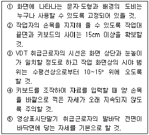
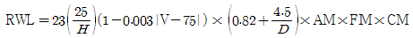
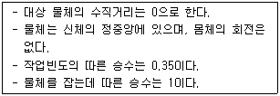
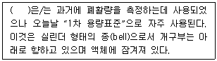
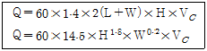
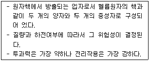
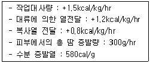
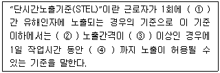

산업위생관리기사 (2011-08-21 기출문제)
1과목: 산업위생학개론
1. 직업성 질환 중 직업상의 업무에 의하여 1차적으로 발생하는 질환을 무엇이라 하는가?
- 속발성 질환
- 합병증
- 일반 질환
- 원발성 질환
(정답률: 89%)

2. 다음 중 작업적성에 대한 생리적 적성검사 항목으로 가장 적합한 것은?
- 체력검사
- 지능검사
- 지각동작검사
- 인성검사
(정답률: 79%)
3. 산업안전보건법에 따라 사업주는 잠함(潛艦) 또는 잠수작업 등 높은 기압에서 하는 작업에 종사하는 근로자에 대하여 몇 시간을 초과하여 근로하게 하여서는 아니되는가?
- 1일 6시간, 1주 34시간
- 1일 8시간, 1주 34시간
- 1일 6시간, 1주 40시간
- 1일 8시간, 1주 40시간
(정답률: 84%)
4. 다음 중 1833년에 제정된 영국의 공장법(Factories Act)에 대한 내용으로 옳은 것은?
- 작업할 수 있는 연령을 15세 이상으로 제한
- 16세 미만 근로자의 야간작업 금지
- 주간작업시간을 48시간으로 제한
- 감독관을 임명하여 사업주 및 근로자에게 교육 의무화
(정답률: 40%)
5. 산업안전보건법상 근로자가 상시 작업하는 장소의 조도기준은 어느 곳을 기준으로 하는가?
- 눈높이의 공간
- 작업장 바닥면
- 작업면
- 천장
(정답률: 58%)
6. 상시 근로자수가 1,000명인 사업장에 1년 동안 6건의 재해로 8명의 재해자가 발생 하였고, 이로 인한 근로손실일수는 80일 이었다. 근로자가 1일 8시간씩 매월 25일씩 근무하였다면 이 사업장의 도수율은 얼마인가?
- 0.03
- 2.5
- 4.0
- 8.0
(정답률: 78%)
7. 영상표시단말기(VDT) 취급에 관한 다음 설명 중 옳은 것으로만 나열한 것은?

- ②, ④, ⑤
- ①, ②, ⑤
- ①, ③, ④
- ③, ④, ⑤
(정답률: 67%)
8. 다음 중 우리나라의 화학물질의 노출기준에 관한 설명으로 틀린 것은?
- Skin 표시 물질은 점막과 눈 그리고 경피로 흡수되어 전신 영향을 일으킬 수 있는 물질을 말한다.
- Skin이라고 표시된 물질은 피부 자극성을 뜻한다.
- 발암성 정보물질의 표기 중 1A는 사람에게 충분한 발암성 증거가 있는 물질을 의미한다.
- 화학물질이 IARC 등의 발암성 등급과 NTP의 R등급을 모두 갖는 경우에는 NTP의 R등급은 고려하지 아니한다.
(정답률: 24%)
9. 다음 중 하인리히의 사고연쇄반응 이론(도미노 이론)에서 사고가 발생하기 바로 직전의 단계에 해당하는 것은?
- 개인적 결함
- 불안전한 행동 및 상태
- 사회적 환경
- 선진 기술의 미적용
(정답률: 100%)
10. 다음 중 실내환경의 빌딩 관련 질환에 관한 설명으로 틀린 것은?
- SBS(Sick Building Syndrome)는 점유자들이 건물에서 보내는 시간과 관계하여 특별한 증상이 없이 건강과 편안함에 영향을 받는 것을 말한다.
- BRI(Building Related Illness)는 건물 공기에 대한 노출로 인해 야기된 질병을 지칭하는 것으로 증상의 진단이 가능하며 공기 중에 있는 물질에 직접적인 원인은 알 수 없는 질병을 뜻한다.
- 레지오넬라 질환(Legionnarie's disease)은 주요 호흡기 질병의 원인균 중 하나로 1년까지도 물속에서 생존하는 균으로 알려져 있다.
- 과민성 폐렴(hypersensitivity pneu-monitis)은 고농도의 알레르기 유발물질에 직접 노출되거나 저농도에 지속적으로 노출될 때 발생한다.
(정답률: 58%)
11. 다음 중 작업환경내 작업자의 작업강도와 유해물질의 인체 영향에 대한 설명으로 적절하지 않은 것은?
- 인간은 동물에 비하여 호흡량이 크므로 유해물질에 대한 감수성은 동물보다 크다.
- 심한 노동을 할 때일수록 체내의 산소 요구가 많아지므로 호흡량이 증가한다.
- 유해물질의 침입경로로서 가장 중요한 것은 호흡기이다.
- 작업강도가 커지면 신진대사가 왕성하게 되고 피로가 증가되어 유해물질의 인체 영향이 적어진다.
(정답률: 91%)
12. 미국산업위생학회 등에서 산업위생전문가들이 지켜야 할 윤리강령을 채택한 바 있는데 다음 중 전문가로서의 책임에 해당하는 것은 어느 것인가?
- 신뢰를 존중하여 정직하게 권고하고, 결과와 개선점을 정확히 보고한다.
- 위험요소와 예방조치에 관하여 근로자와 상담한다.
- 일반 대중에 관한 사항은 정직하게 발표한다.
- 성실성과 학문적 실력면에서 최고 수준을 유지한다.
(정답률: 87%)
13. 다음 중 혐기성 대사에 사용되는 에너지원이 아닌 것은?
- 아데노신 삼인산
- 포도당
- 단백질
- 크레아틴 인산
(정답률: 82%)
14. 다음 중 심한 작업이나 운동시 호흡조절에 영향을 주는 요인과 거리가 먼 것은 어느 것인가?
- 이산화탄소
- 산소
- 혈중 포도당
- 수소이온
(정답률: 47%)
15. 산업위생의 정의에 나타난 산업위생의 접근 원칙 4가지 중 평가(evaluation)에 포함되지 않는 것은?
- 시료의 채취와 분석
- 예비조사의 목적과 범위 결정
- 노출정도를 노출기준과 통계적인 근거로 비교하여 판정
- 물리적, 화학적, 생물학적, 인간공학적 유해인자 목록 작성
(정답률: 67%)
16. 근로자로부터 수평으로 40cm 떨어진 10kg의 물체를 바닥으로부터 150cm 높이로 들어 올리는 작업을 1분에 5회 씩 1일 8시간 동안 하고 있다. 이때의 중량물 취급지수는 약 얼마인가? (단, 적용식은

이다. 관련조건은 다음을 따른다.)
- 1.91
- 2.71
- 3.02
- 4.60
(정답률: 29%)
17. 다음 중 아세톤(TLV=500ppm) 200ppm과 톨루엔(TLV=50ppm) 35ppm이 각각 노출되어 있는 실내작업장에서 노출기준의 초과 여부를 평가한 결과로 올바른 것은? (단, 두 물질 간에 유해성이 인체의 서로 다른 부위에 작용한다는 증거가 없는 것으로 간주한다.)
- 노출지수가 약 0.72이므로 노출기준 미만이다.
- 노출지수가 약 1.1이므로 노출기준 미만이다.
- 노출지수가 약 0.72이므로 노출기준을 초과하였다.
- 노출지수가 약 1.1이므로 노출기준을 초과하였다.
(정답률: 82%)
18. 다음 중 직업병의 예방대책으로 적절하지 않은 것은?
- 유해요인이 발암성 물질일 경우 전혀 노출이 되지 않도록 완전하게 제거되어야 한다.
- 근로자가 업무를 수행하는데 불편함이나 스트레스가 없도록 하여야 하며 새로운 유해요인이 발생되지 않아야 한다.
- 유해요인에 노출되고 있는 모든 근로자를 보호하여야 한다.
- 주변의 지역사회를 제외한 작업장에서의 위험요인을 제거하여야 한다.
(정답률: 89%)
19. 다음 중 물질안전보건자료(MSDS)의 작성원칙에 관한 설명으로 틀린 것은 어느 것인가?
- MSDS는 한글로 작성하는 것을 원칙으로 한다.
- 외국어로 되어 있는 MSDS를 번역하는 경우에는 자료의 신뢰성이 확보될 수 있도록 최초 작성기관명과 시기를 함께 기재하여야 한다.
- 실험실에서 시험·연구목적으로 사용하는 시약으로서 MSDS가 외국어로 작성된 경우에는 한국어로 번역하지 아니할 수 있다.
- 각 작성항목은 빠짐없이 작성하여야 하지만 부득이 어느 항목에 대해 관련 정보를 얻을 수 없는 경우에는 작성란에 “해당없음”이라고 기재한다.
(정답률: 88%)
20. 다음 중 피로방지의 대책으로 적절하지 않은 것은?
- 충분한 수면
- 고도의 기계화와 분업화
- 작업환경의 정리·정돈
- 작업 전·후의 간단한 체조 실시
(정답률: 63%)
2과목: 작업위생측정 및 평가
21. 어느 작업장에서 저유량 공기채취기를 사용하여 분진농도를 측정하였다. 시료 채취 전·후의 여과지 무게는 각각 21.6mg, 130.4mg 이었으며, 채취기의 유량은 4.24L/min이었고, 240분 동안 시료를 채취하였다면 분진의 농도는?
- 약 107mg/m3
- 약 117mg/m3
- 약 127mg/m3
- 약 137mg/m3
(정답률: 69%)
22. 다음은 표준기구에 관한 설명이다. ( ) 안에 가장 적합한 것은?

- Rotameter
- Wet-test meter
- Pitot tube
- Spirometer
(정답률: 40%)
23. 소음과 관련된 용어 중 둘 또는 그 이상의 음파의 구조적 간섭에 의해 시간적으로 일정하게 음압의 최고와 최저가 반복되는 패턴의 파를 의미하는 것은?
- 정재파
- 맥놀이파
- 발산파
- 평면파
(정답률: 73%)
24. 50% 벤젠, 20% 아세톤, 30% 톨루엔의 중량비로 조성된 용제가 증발되어 작업 환경을 오염시키고 있다. 이때 TLV는 각각 34mg/m3, 1,780mg/m3 및 375mg/m3라면 이 작업장의 혼합물의 허용농도는? (단, 상가작용 기준)
- 37.2mg/m3
- 49.6mg/m3
- 56.9mg/m3
- 64.0mg/m3
(정답률: 69%)
25. 작업환경 측정의 단위 표시로 옳지 않은 것은? (단, 고시 기준)
- 석면 농도：개/cm3
- 소음：dB(V)
- 가스, 증기, 미스트 등의 농도：mg/m3 또는 ppm
- 고열(복사열 포함)：습구흑구온도지수를 구하여 ℃로 표시
(정답률: 67%)
26. 일산화탄소 0.1m3가 100,000m3의 밀폐된 차고에 방출되었다면 이때 차고 내 공기 중 일산화탄소의 농도(ppm)는? (단, 방출 전 차고 내 일산화탄소 농도는 무시함.)
- 0.1
- 1.0
- 10
- 100
(정답률: 59%)
27. 석면 측정방법에서 공기 중 석면시료를 가장 정확하게 분석할 수 있고 석면의 성분 분석이 가능하며 매우 가는 섬유도 관찰 가능하나 값이 비싸고 분석시간이 많이 소요되는 것은 어느 것인가?
- 위상차현미경법
- 전자현미경법
- X-선 회절법
- 편광현미경법
(정답률: 84%)
28. 작업장 기본특성 파악을 위한 예비조사 내용 중 유사노출그룹(HEG) 설정에 관한 설명으로 가장 거리가 먼 것은?
- 역학조사를 수행시 사건이 발생된 근로자와 다른 노출그룹의 노출농도를 근거로 사건이 발생된 노출농도의 추정에 유용하며, 지역 시료채취만 인정 된다.
- 조직, 공정, 작업범주 그리고 공정과 작업내용별로 구분하여 설정한다.
- 모든 근로자를 유사한 노출그룹별로 구분하고 그룹별로 대표적인 근로자를 선택하여 측정하면 측정하지 않은 근로자의 노출농도까지도 추정할 수 있다.
- 유사노출그룹 설정을 위한 목적 중 시료채취수를 경제적으로 하기 위함도 있다.
(정답률: 83%)
29. 다음 중 계통오차의 종류로 거리가 먼 것은 어느 것인가?(오류 신고가 접수된 문제입니다. 반드시 정답과 해설을 확인하시기 바랍니다.)
- 한 가지 실험측정을 반복할 때 측정값들의 변동으로 발생되는 오차
- 측정 및 분석기기의 부정확성으로 발생된 오차
- 측정하는 개인의 선입관으로 발생된 오차
- 측정 및 분석시 온도나 습도와 같이 알려진 외계의 영향으로 생기는 오차
(정답률: 30%)
30. 원자흡광광도계에 관한 설명으로 옳지 않은 것은?
- 원자흡광광도계는 광원, 원자화장치, 단색화장치, 검출부의 주요 요소로 구성되어 있어야 한다.
- 작업환경분야에서 가장 널리 사용되는 연료가스와 조연가스의 조합으로는 아세틸렌－공기와 아세틸렌－아산화질소 로서 분석대상 금속에 따라 적절히 선택해서 사용한다.
- 검출부는 단색화장치에서 나오는 빛의 세기를 측정 가능한 전기적 신호로 증폭시킨 후 이 전기적 신호를 판독장치를 통해 흡광도나 흡광률 또는 투과율 등으로 표시한다.
- 광원은 분석하고자 하는 금속의 흡수 파장의 복사선을 흡수하여야 하며, 주로 속빈양극램프가 사용된다.
(정답률: 65%)
31. 흡착관을 이용하여 시료를 포집할 때 고려해야 할 사항으로 거리가 먼 것은?
- 파과현상이 발생할 경우 오염물질의 농도를 과소평가할 수 있으므로 주의해야 한다.
- 시료 저장시 흡착물질의 이동현상(migration)이 일어날 수 있으며 파과현상과 구별하기 힘들다.
- 작업환경 측정시 많이 사용하는 흡착관은 앞층이 100mg, 뒤층이 50mg으로 되어 있는데 오염물질에 따라 다른 크기의 흡착제를 사용하기도 한다.
- 활성탄 흡착제는 탄소의 불포화결합을 가진 분자를 선택적으로 흡착하며 큰 비표면적을 가진다.
(정답률: 54%)
32. 공기시료 채취시 공기유량과 용량을 보정하는 표준기구 중 1차 표준기구는?
- 흑연 피스톤미터
- 로터미터
- 습식 테스터미터
- 건식 가스미터
(정답률: 78%)
33. 다음 중 검지관법의 특성으로 가장 거리가 먼 것은?
- 색변화가 시간에 따라 변하므로 제조자가 정한 시간에 읽어야 한다.
- 밀폐공간 등에서 안전상의 문제시 유용하게 사용가능하다.
- 반응시간이 빠른 편이다.
- 특이도가 높다.
(정답률: 78%)
34. 분석기기가 검출할 수 있고 신뢰성을 가질 수 있는 양인 정량한계(LOQ)에 관한 설명으로 옳은 것은?
- 표준편차의 3배
- 표준편차의 3.3배
- 표준편차의 5배
- 표준편차의 10배
(정답률: 84%)
35. 소음의 측정시간 및 횟수에 관한 기준으로 옳지 않은 것은?
- 단위 작업장소에서의 소음발생시간이 6시간 이내인 경우나 소음발생원에서의 발생시간이 간헐적인 경우에는 등간격으로 나누어 3회 이상 측정하여야 한다.
- 단위 작업장소에서 소음수준은 규정된 측정위치 및 지점에서 1일 작업시간을 1시간 간격으로 나누어 6회 이상 측정한다.
- 소음 발생특성이 연속음으로서 측정치가 변동이 없다고 자격자 또는 지정측정기관이 판단한 경우에는 1시간 동안을 등간격으로 나누어 3회 이상 측정할 수 있다.
- 단위 작업장소에서 소음수준은 규정된 측정위치 및 지점에서 1일 작업시간동안 6시간 이상 연속측정한다.
(정답률: 69%)
36. 측정치 1, 3, 5, 7, 9의 변이계수는?
- 약 0.13
- 약 0.63
- 약 1.33
- 약 1.83
(정답률: 53%)
37. 작업장에서 현재 총 흡음량은 1,500sabins이다. 이 작업장을 천장과 벽 부분에 흡음재를 이용하여 3,300sabins를 추가하였을 때 흡음대책에 따른 실내소음의 저감량은?
- 약 15dB
- 약 8dB
- 약 5dB
- 약 1dB
(정답률: 79%)
38. 알고 있는 공기 중 농도를 만드는 방법인 Dynamic Method의 장점으로 틀린 것은?
- 다양한 농도범위에서 제조 가능하다.
- 가스, 증기, 에어로졸 실험도 가능하다.
- 가격이 저렴하고, 만들기가 간단하다.
- 소량의 누출이나 벽면에 의한 손실은 무시한다.
(정답률: 86%)
39. 입경이 50㎛이고 입자비중이 1.32인 입자의 침강속도는? (단, 입경이 1~50㎛인 먼지의 침강속도를 구하기 위해 산업위생 분야에서 주로 사용하는 식 적용)
- 8.6cm/sec
- 9.9cm/sec
- 11.9cm/sec
- 13.6cm/sec
(정답률: 73%)
40. 고열 측정구분에 의한 측정기기와 측정시간의 연결로 옳지 않은 것은? (단, 고용노동부 고시 기준)
- 습구온도：0.5도 간격의 눈금이 있는 아스만통풍건습계－25분 이상
- 습구온도：자연습구온도를 측정할 수 있는 기기－자연습구온도계 5분 이상
- 흑구 및 습구흑구온도：직경이 5센티 미터 이상되는 흑구온도계 또는 습구흑구온도를 동시에 측정할 수 있는 기기－직경이 15센티미터일 경우 15분 이상
- 흑구 및 습구흑구온도：직경이 5센티미터 이상되는 흑구온도계 또는 습구흑구온도를 동시에 측정할 수 있는 기기－직경이 7.5센티미터 또는 5센티미터일 경우 5분 이상
(정답률: 64%)
3과목: 작업환경관리대책
41. 1기압, 온도 15℃ 조건에서 속도압이 37.2mmH2O일 때 기류의 유속은? (단, 15℃, 1기압에서 공기의 밀도는 1.225kg/m3이다.)
- 24.4m/sec
- 26.1m/sec
- 28.3m/sec
- 29.6m/sec
(정답률: 69%)
42. A유체관의 압력을 측정한 결과, 정압이 -18.56mmH2O이고 전압이 20mmH2O였다. 이 유체관의 유속(m/s)은 약 얼마인가? (단, 공기밀도 1.21kg/m3 기준)
- 10
- 15
- 20
- 25
(정답률: 50%)
43. 길이가 2.4m, 폭이 0.4m인 플랜지 부착 슬로트형 후드가 설치되어 있다. 포촉점까지의 거리가 0.5m, 제어속도가 0.4m/s일 때 필요송풍량은? (단, 1/2원주 슬로트형, C=2.8 적용)
- 20.2m3/min
- 40.3m3/min
- 80.6m3/min
- 161.3m3/min
(정답률: 45%)
44. 덕트의 설치원칙으로 옳지 않은 것은?
- 덕트는 가능한 한 짧게 배치하도록 한다.
- 밴드의 수는 가능한 한 적게 하도록 한다.
- 가능한 한 후드의 가까운 곳에 설치한다.
- 공기흐름이 원활하도록 상향구배로 만든다.
(정답률: 93%)
45. 한 면이 1m인 정사각형 외부식 캐노피형 hood를 설치하고자 한다. 높이가 0.7m, 제어속도가 18m/min일 때 소요 송풍량(m3/min)은? (단, 다음 공식 중 적합한 수식을 선택 적용한다.)

- 약 110m3/min
- 약 140m3/min
- 약 170m3/min
- 약 190m3/min
(정답률: 57%)
46. 국소배기장치에 관한 주의사항으로 가장 거리가 먼 것은?
- 배기관은 유해물질이 발산하는 부위의 공기를 모두 빨아낼 수 있는 성능을 갖출 것
- 흡인되는 공기가 근로자의 호흡기를 거치지 않도록 할 것
- 먼지를 제거할 때에는 공기속도를 조절하여 배기관 안에서 먼지가 일어나도록 할 것
- 유독물질의 경우에는 굴뚝에 흡인장치를 보강할 것
(정답률: 81%)
47. 호흡용 보호구에 관한 설명으로 가장 거리가 먼 것은?
- 방독마스크는 면, 모, 합성섬유 등을 필터로 사용한다.
- 방독마스크는 공기 중의 산소가 부족하면 사용할 수 없다.
- 방독마스크는 일시적인 작업 또는 긴급용으로 사용하여야 한다.
- 방진마스크는 비휘발성 입자에 대한 보호가 가능하다.
(정답률: 90%)
48. 축류송풍기에 관한 설명으로 가장 거리가 먼 것은?
- 전동기와 직결할 수 있고, 또 축방향 흐름이기 때문에 관로 도중에 설치할 수 있다.
- 무겁고, 재료비 및 설치비용이 비싸다.
- 풍압이 낮으며, 원심송풍기보다 주속도가 커서 소음이 크다.
- 규정 풍량 이외에서는 효율이 떨어지므로 가열공기 또는 오염공기의 취급에 부적당하다.
(정답률: 41%)
49. 푸시풀 후드(push-pull hood)에 관한 설명으로 옳지 않은 것은?
- 도금조와 같이 폭이 넓은 경우에 사용하면 포집효율을 증가시키면서 필요유량을 대폭 감소시킬 수 있다.
- 개방조 한 변에서 압축공기를 이용하여 오염물질이 발생하는 표면에 공기를 불어 반대쪽에 오염물질이 도달하게 한다.
- 배기후드의 목적은 측방형 후드와 같이 제어속도를 내기 위함이며, 배기후드에서의 슬롯속도는 1m/s 정도가 되도록 배기구 크기를 조절한다.
- 공정에서 작업물체를 처리조에 넣거나 꺼내는 중에 공기막이 파괴되어 오염물질이 발생하는 단점이 있다.
(정답률: 56%)
50. 회전차 외경이 600mm인 원심송풍기의 풍량은 200m3/min이다. 회전차 외경이 1,000mm인 동류(상사구조)의 송풍기가 동일한 회전수로 운전된다면 이 송풍기의 풍량은? (단, 두 경우 모두 표준공기를 취급한다.)
- 약 333m3/min
- 약 556m3/min
- 약 926m3/min
- 약 2,572m3/min
(정답률: 42%)
51. 다음 중 주물 작업시 발생되는 유해인자와 가장 거리가 먼 것은?(오류 신고가 접수된 문제입니다. 반드시 정답과 해설을 확인하시기 바랍니다.)
- 소음 발생
- 금속흄 발생
- 분진 발생
- 자외선 발생
(정답률: 26%)
52. 다음 중 귀마개에 관한 설명으로 옳지 않은 것은?
- 휴대가 편하다.
- 고온작업장에서도 불편없이 사용할 수 있다.
- 근로자들이 착용하였는지 쉽게 확인할 수 있다.
- 제대로 착용하는데 시간이 걸리고 요령을 습득해야 한다.
(정답률: 91%)
53. 보호장구의 재질과 적용물질에 대한 내용으로 옳지 않은 것은?
- 면－극성 용제에 효과적이다.
- Nitrile 고무－비극성 용제에 효과적이다.
- 가죽－용제에는 사용하지 못한다.
- 천연고무(latex)－극성 용제에 효과적이다.
(정답률: 59%)
54. 작업환경의 관리원칙인 대치 개선방법으로 옳지 않은 것은?
- 성냥 제조시：황린 대신 적린을 사용함
- 세탁시：화재 예방을 위해 석유나프타 대신 4클로로에틸렌을 사용함
- 땜질한 납을 oscillating－type sander로 깎던 것을 고속회전 그라인더를 이용함
- 분말로 출하되는 원료를 고형상태의 원료로 출하함
(정답률: 77%)
55. 다음 중 전기집진장치에 관한 설명으로 옳지 않은 것은?
- 전압변동과 같은 조건변동에 쉽게 적응할 수 있다.
- 고온가스를 처리할 수 있다.
- 배출가스의 온도강하가 적으며 대량의 가스처리가 가능하다.
- 압력손실이 적어 송풍기의 가동비용이 저렴하다.
(정답률: 66%)
56. 가지덕트를 주덕트에 연결하고자 할 때 다음 중 가장 적합한 각도는?
- 90˚
- 70˚
- 50˚
- 30˚
(정답률: 74%)
57. 세정제진장치의 입자 포집원리에 관한 설명으로 옳지 않은 것은?
- 입자를 함유한 가스를 선회 운동시켜 입자에 원심력을 갖게 하여 부착된다.
- 액적에 입자가 충돌하여 부착된다.
- 입자를 핵으로 한 증기의 응결에 따라서 응집성이 촉진된다.
- 액막 및 기포에 입자가 접촉하여 부착된다.
(정답률: 41%)
58. 내경이 760mm의 얇은 강철판의 직관을 통하여 풍량 120m3/min의 표준공기를 송풍할 때의 Reynold수는? (단, 동점성계수：1.255×10-5m2/s)
- 2.04×105
- 2.23×105
- 2.67×105
- 2.92×105
(정답률: 53%)
59. 다음과 같은 조건에서 오염물질의 농도가 200ppm까지 도달하였다가 오염물질발생이 중지되었을 때, 공기 중 농도가 200ppm에서 19ppm으로 감소하는데 얼마나 걸리는가? (단, 1차 반응, 공간부피 V=3,000m3, 환기량 Q=1.17m3/sec)
- 약 89분
- 약 100분
- 약 109분
- 약 115분
(정답률: 59%)
60. 보호구의 보호정도와 한계를 나타나는데 필요한 보호계수를 산정하는 공식으로 옳은 것은? (단, 보호계수=PF, 보호구 밖의 농도=C0, 보호구 안의 농도=C1)
- PF=C0/C1
- PF=(C1/C0)×100
- PF=(C0/C1)×0.5
- PF=(C1/C0)×0.5
(정답률: 72%)
4과목: 물리적유해인자관리
61. 다음 중 이상기압의 영향으로 발생되는 고공성 폐수종에 관한 설명으로 틀린 것은?
- 어른보다 아이들에게서 많이 발생된다.
- 고공 순화된 사람이 해면에 돌아올 때에도 흔히 일어난다.
- 진해성 기침과 호흡곤란이 나타나고 폐동맥 혈압이 급격히 낮아져 구토, 실신 등이 발생한다.
- 산소공급과 해면 귀환으로 급속히 소실되며, 증세는 반복해서 발병하는 경향이 있다.
(정답률: 39%)
62. 다음 중 고압환경(가압현상)에 관한 설명으로 틀린 것은?
- 질소가스는 마취작용을 나타내서 작업력의 저하를 가져온다.
- 1차적으로 울혈, 부종, 출혈, 동통 등을 동반한다.
- 고압하의 대기가스의 독성때문에 나타나는 현상은 2차성 압력현상이라 한다.
- 혈액과 조직의 질소가 체내에 기포를 형성하여 순환장애를 일으킨다.
(정답률: 38%)
63. 18℃ 공기 중에서 800Hz인 음의 파장은 약 몇 m인가?
- 0.35
- 0.43
- 3.5
- 4.3
(정답률: 46%)
64. 다음 중 소음에 대한 청감보정 특성치에 관한 설명으로 틀린 것은?
- A특성치와 C특성치를 동시에 측정하면 그 소음의 주파수 구성을 대략 추정할 수 있다.
- A, B, C 특성 모두 4,000Hz에서 보정치가 0이다.
- 소음에 대한 허용기준은 A특성치에 준하는 것이다.
- A특성치란 대략 40phon의 등감곡선과 비슷하게 주파수에 따른 반응을 보정하여 측정한 음압수준이다.
(정답률: 72%)
65. 다음 중 국소진동이 사람에게 영향을 줄 수 있는 진동의 주파수 범위로 가장 적절한 것은?
- 1~80Hz
- 5~100Hz
- 8~1,500Hz
- 20~20,000Hz
(정답률: 67%)
66. 다음 설명에 해당하는 전리방사선의 종류는?

- X선
- α선
- β선
- γ선
(정답률: 78%)
67. 다음 중 일반적인 작업장의 인공조명시 고려사항으로 적절하지 않은 것은?
- 조명도를 균등히 유지할 것
- 경제적이며 취급이 용이할 것
- 가급적 직접조명이 되도록 설치할 것
- 폭발성 또는 발화성이 없으며 유해가스를 발생하지 않을 것
(정답률: 91%)
68. 다음과 같은 작업조건에서 1일 8시간동안 작업하였다면, 1일 근무시간 동안 인체에 누적된 열량은 얼마인가? (단, 근로자의 체중은 60kg이다.)

- 242kcal
- 288kcal
- 1,152kcal
- 3,072kcal
(정답률: 56%)
69. 다음 중 소음의 대책에 있어 전파경로에 대한 대책과 가장 거리가 먼 것은 어느 것인가?
- 거리감쇠：배치의 변경
- 차폐효과：방음벽 설치
- 지향성：음원방향 유지
- 흡음：건물 내부 소음처리
(정답률: 74%)
70. 소음이 발생하는 작업장에서 1일 8시간 근무하는 동안 100dB에 30분, 95dB에 1시간 30분, 90dB에 3시간이 노출되었다면 소음노출지수는 얼마인가?
- 1.0
- 1.1
- 1.2
- 1.3
(정답률: 54%)
71. 다음 중 산소농도 저하시 농도에 따른 증상이 잘못 연결된 것은?
- 12~16%：맥박과 호흡수 증가
- 9~14%：판단력 저하와 기억상실
- 6~10%：의식상실, 근육경련
- 6% 이하：중추신경장해, Cheynestoke호흡
(정답률: 64%)
72. 다음 중 습구흑구온도지수(WBGT)에 관한 설명으로 옳은 것은?
- WBGT가 높을수록 휴식시간이 증가되어야 한다.
- WBGT는 건구온도와 습구온도에 비례하고, 흑구온도에 반비례한다.
- WBGT는 고온환경을 나타내는 값이므로 실외작업에만 적용한다.
- WBGT는 복사열을 제외한 고열의 측정단위로 사용되며, 화씨온도(˚F)로 표현한다.
(정답률: 91%)
73. 다음 중 한랭장해에 대한 예방법으로 적절하지 않은 것은?
- 의복이나 구두 등의 습기를 제거한다.
- 과도한 피로를 피하고, 충분한 식사를 한다.
- 가능한 한 언제나 발과 다리를 움직여 혈액순환을 돕는다.
- 가능한 꼭 맞는 구두, 장갑을 착용하여 한기가 들어오지 않도록 한다.
(정답률: 91%)
74. 다음 중 방사선에 감수성이 가장 큰 신체 부위는?
- 위장
- 조혈기관
- 뇌
- 근육
(정답률: 79%)
75. 다음 중 압력이 가장 높은 것은 어느 것인가?
- 14.7psi
- 101,325Pa
- 760mmHg
- 2atm
(정답률: 84%)
76. 다음 중 비전리 방사선에 관한 설명으로 틀린 것은?
- 고열 물체가 방출하는 복사선은 대부분 적외선으로 열선이라고도 한다.
- 290~315nm의 파장을 Dorno선 또는 생명선이라 하며 생체와 밀접한 관련이 있다.
- 태양으로부터 방출되는 복사에너지의 52%는 가시광선이다.
- 레이저란 자외선, 가시광선, 적외선 가운데 인위적으로 특정한 파장 부위를 강력하게 증폭시켜 얻은 복사선을 말한다.
(정답률: 57%)
77. 다음 중 국소진동에 의하여 손가락의 창백, 청색증, 저림, 냉각, 동통이 나타나는 장해를 무엇이라 하는가?
- 근위축
- 요천부 동통
- 요부 염좌
- 레이노드증후군
(정답률: 96%)
78. 다음 중 직업성 난청에 관한 설명으로 틀린 것은?
- 일시적 난청은 청력의 일시적인 피로현상이다.
- 영구적 난청은 노인성 난청과 같은 현상이다.
- 일반적으로 초기청력 손실을 C5-dip현상이라 한다.
- 직업성 난청은 처음 중음부에서 시작되어 고음부 순서로 파급된다.
(정답률: 77%)
79. 다음 중 1fc(foot candle)은 약 몇 럭스(lux)인가?
- 3.9
- 8.9
- 10.8
- 13.4
(정답률: 69%)
80. 다음 중 자외선 노출에 관한 설명으로 적절하지 않은 것은?
- 선탠로션, 크림과 같은 피부 보호제는 특정 파장을 차단해 줄 수 있다.
- 자외선의 허용 노출기준은 피부와 눈의 영향 정도에 기초하고 있다.
- 자외선에 대한 건강 영향은 파장에 관계없이 일정하게 나타난다.
- 자외선의 노출기준은 단위면적당 조사되는 에너지로서 노출량은 J/m2 등의 단위로 표현한다.
(정답률: 84%)
5과목: 산업독성학
81. 다음 중 탄화수소계 유기용제에 관한 설명으로 틀린 것은?
- 지방족 탄화수소 중 탄소수가 4개 이하인 것은 단순 질식제로서의 역할 외에는 인체에 거의 영향이 없다.
- 할로겐화 탄화수소의 독성의 정도는 할로겐원소의 수 및 화합물의 분자량이 작을수록 증가한다.
- 방향족 탄화수소의 대표적인 것은 톨루엔, 크실렌 등이 있으며, 고농도에서는 주로 중추신경계에 영향을 미친다.
- 방향족 탄화수소 중 저농도에서 장기간 노출되면 조혈장해를 일으키는 대표적인 것이 벤젠이다.
(정답률: 39%)
82. 작업자가 납 흄에 장기간 노출되어 혈액 중 납의 농도가 높아졌을 때 일어나는 혈액 내 현상이 아닌 것은?
- K+와 수분이 손실된다.
- 삼투압에 의하여 적혈구가 위축된다.
- 적혈구 생존시간이 감소한다.
- 적혈구 내 전해질이 급격히 증가한다.
(정답률: 63%)
83. 다음 중 동물실험을 통하여 산출한 독물량의 한계치(NOED：No-Observable Effect Dose)를 사람에게 적용하기 위하여 인간의 안전폭로량(SHD)을 계산할 때 안전계수와 함께 활용되는 항목은?
- 체중
- 축적도
- 평균수명
- 감응도
(정답률: 72%)
84. 다음 중 생물학적 모니터링의 장점으로 틀린 것은?
- 흡수경로와 상관없이 전체적인 노출을 평가할 수 있다.
- 노출된 유해인자에 대한 종합적 흡수 정도를 평가할 수 있다.
- 지방조직 등 인체에서 채취할 수 있는 모든 부분에 대하여 분석할 수 있다.
- 인체에 흡수된 내재용량이나 중요한 조직 부위에 영향을 미치는 양을 모니터링할 수 있다.
(정답률: 46%)
85. 구리의 독성에 대한 인체실험 결과, 안전흡수량이 체중 kg당 0.008mg이었다. 1일 8시간 작업시의 허용농도는 약 몇 mg/m3인가? (단, 근로자 평균체중은 70kg, 작업시의 폐환기율은 1.45m3/h 로 가정한다.)
- 0.035
- 0.048
- 0.⑤6
- 0.064
(정답률: 68%)
86. 다음 중 중절모자를 만드는 사람들에게 처음으로 발견되어 hatter's shake라고 하며 근육경련을 유발하는 중금속은?
- 카드뮴
- 수은
- 망간
- 납
(정답률: 70%)
87. 다음 중 유기용제에 의한 중독을 예방하기 위한 대책과 가장 거리가 먼 것은?
- 유기용제를 취급하는 작업에 종사하는 근로자에 대하여는 정기적으로 일반건강진단을 실시한다.
- 사업주가 작업환경 개선을 위해 생산 공정의 변경, 생산, 설비의 밀폐 등의 방법으로 유해 요인을 근원적으로 차단한다.
- 작업환경 상태의 정확한 파악을 위하여 작업환경 측정을 실시하고 불량 작업장에 대하여는 환경을 개선한다.
- 유기용제 취급자에게는 유기용제의 유해성에 관하여 정기적으로 교육시킨다.
(정답률: 78%)
88. 다음 중 작업장 유해물질에 관한 설명으로 틀린 것은?
- 작업장에서 유해물질의 주 흡수경로는 호흡기계이다.
- 유해물질의 체내 배설은 주로 대변을 통해서 이루어진다.
- 납은 혈액, 일산화탄소는 헤모글로빈, 인은 골격의 기능장애를 일으킨다.
- 수은, 망간은 신경계통에 기능장애를 일으킨다.
(정답률: 79%)
89. 다음 중 규폐증에 관한 설명으로 틀린 것은?
- 주로 석재 가공, 내화벽돌 제조, 도자기 제조 공정에서 환자가 발생한다.
- 폐결핵을 합병증으로 하여 폐하엽 부위에 많이 생긴다.
- 결정형 유리규산 입자의 흡입이 원인이 된다.
- 초기에는 천식발작 증상을 보이며 폐암발생률을 높인다.
(정답률: 44%)
90. 다음 중 상온 및 상압에서 흄(fume)의 상태를 가장 적절하게 나타낸 것은?
- 고체상태
- 기체상태
- 액체상태
- 기체와 액체의 공존상태
(정답률: 53%)
91. 다음 설명 중 ( ) 안에 들어갈 내용을 올바르게 나열한 것은?

- ① 5분, ② 1회, ③ 30분, ④ 6회
- ① 15분, ② 2회, ③ 60분, ④ 6회
- ① 15분, ② 2회, ③ 30분, ④ 4회
- ① 15분, ② 1회, ③ 60분, ④ 4회
(정답률: 74%)
92. 다음 중 유해화학물질의 노출경로에 관한 설명으로 틀린 것은?
- 소화기계통으로 노출되는 경우가 호흡기로 노출되는 경우보다 흡수가 잘 이루어진다.
- 소화기계통으로 침입하는 것은 위장관에서 산화, 환원, 분해과정을 거치면서 해독되기도 한다.
- 입으로 들어간 유해물질은 침이나 그밖의 소화액에 의해 위장관에서 흡수된다.
- 위의 산도에 의하여 유해물질이 화학반응을 일으켜 다른 물질로 되기도 한다.
(정답률: 77%)
93. 다음 중 카드뮴의 중독, 치료 및 예방대책에 관한 설명으로 틀린 것은?
- 소변 속의 카드뮴 배설량은 카드뮴 흡수를 나타내는 지표가 된다.
- BAL 또는 CaEDTA 등을 투여하여 신장에 대한 독작용을 제거한다.
- 칼슘대사에 장해를 주어 신결석을 동반한 증후군이 나타나고 다량의 칼슘 배설이 일어난다.
- 폐활량 감소, 잔기량 증가 및 호흡곤란의 폐증세가 나타나며, 이 증세는 노출기간과 노출농도에 의해 좌우된다.
(정답률: 80%)
94. 다음 중 무기연에 속하지 않는 것은?
- 금속연
- 일산화연
- 사산화삼연
- 4메틸연
(정답률: 44%)
95. 톨루엔은 단지 자극증상과 중추신경계 억제의 일반 증상만을 유발하며, 톨루엔의 대사산물은 생물학적 노출지표로 이용된다. 다음 중 톨루엔의 대사산물은?
- 메틸 마뇨산
- 만델린산
- 마뇨산
- 페놀
(정답률: 55%)
96. 다음 중 발암작용이 없는 물질은?
- 브롬
- 벤젠
- 벤지딘
- 석면
(정답률: 54%)
97. 다음 중 인체의 세포 내 호흡을 방해하는 화학적 질식성 물질은?
- 탄산가스
- 포스겐
- HCN 등 시안화합물
- 아황산가스
(정답률: 39%)
98. 다음 중 피부 독성에 있어 경피흡수에 영향을 주는 인자와 가장 거리가 먼 것은?
- 개인의 민감도
- 용매(vehicle)
- 화학물질
- 온도
(정답률: 62%)
99. 작업환경 중에서 부유 분진이 호흡기계에 축적되는 주요 작용기전과 가장 거리가 먼 것은 어느 것인가?
- 충돌
- 침강
- 농축
- 확산
(정답률: 68%)
100. 다음 중 벤젠에 관한 설명으로 틀린 것은?
- 벤젠은 백혈병을 유발하는 것으로 확인된 물질이다.
- 벤젠은 골수독성(myelotoxin)물질이라는 점에서 다른 유기용제와 다르다.
- 벤젠은 지방족 화합물로서 재생불량성빈혈을 일으킨다.
- 혈액조직에서 벤젠이 유발하는 가장 일반적인 독성은 백혈구 수의 감소로 인한 응고작용 결핍 등이다.
(정답률: 50%)